Aggregation-based
editAggregation-based visualizations are the core Kibana panels, and are not optimized for a specific use case.
With aggregation-based visualizations, you can:
- Split charts up to three aggregation levels, which is more than Lens and TSVB
- Create visualization with non-time series data
- Use a saved search as an input
- Sort data tables and use the summary row and percentage column features
- Assign colors to data series
- Extend features with plugins
Aggregation-based visualizations include the following limitations:
- Limited styling options
- Math is unsupported
- Multiple indices is unsupported
Types of aggregation-based visualizations
editKibana supports the following types of aggregation-based visualizations.
|
Area Displays data points, connected by a line, where the area between the line and axes are shaded. Use area charts to compare two or more categories over time, and display the magnitude of trends. |
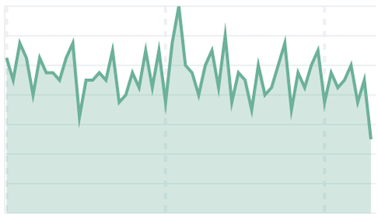 |
|
Data table Displays your aggregation results in a tabular format. Use data tables to display server configuration details, track counts, min, or max values for a specific field, and monitor the status of key services. |
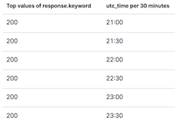 |
|
Gauge Displays your data along a scale that changes color according to where your data falls on the expected scale. Use the gauge to show how metric values relate to reference threshold values, or determine how a specified field is performing versus how it is expected to perform. |
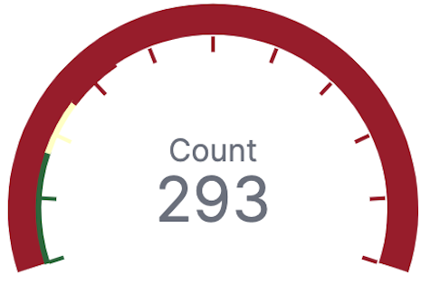 |
|
Goal Displays how your metric progresses toward a fixed goal. Use the goal to display an easy to read visual of the status of your goal progression. |
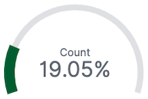 |
|
Heat map Displays graphical representations of data where the individual values are represented by colors. Use heat maps when your data set includes categorical data. For example, use a heat map to see the flights of origin countries compared to destination countries using the sample flight data. |
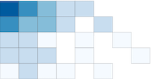 |
|
Horizontal Bar Displays bars side-by-side where each bar represents a category. Use bar charts to compare data across a large number of categories, display data that includes categories with negative values, and easily identify the categories that represent the highest and lowest values. Kibana also supports vertical bar charts. |
|
|
Line Displays data points that are connected by a line. Use line charts to visualize a sequence of values, discover trends over time, and forecast future values. |
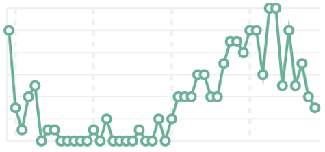 |
|
Metric Displays a single numeric value for an aggregation. Use the metric visualization when you have a numeric value that is powerful enough to tell a story about your data. |
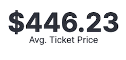 |
|
Pie Displays slices that represent a data category, where the slice size is proportional to the quantity it represents. Use pie charts to show comparisons between multiple categories, illustrate the dominance of one category over others, and show percentage or proportional data. |
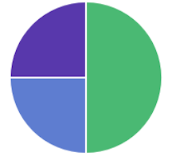 |
|
Tag cloud Graphical representations of how frequently a word appears in the source text. Use tag clouds to easily produce a summary of large documents and create visual art for a specific topic. |
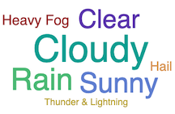 |

Create an aggregation-based visualization panel
editChoose the type of visualization you want to create, then use the editor to configure the options.
-
On the dashboard, click All types > Aggregation based.
- Select the visualization type you want to create.
-
Select the data source you want to visualize.
There is no performance impact on the data source you select. For example, Discover saved searches perform the same as data views.
-
Add the aggregations you want to visualize using the editor, then click Update.
For the Date Histogram to use an auto interval, the date field must match the primary time field of the data view.
-
To change the order, drag and drop the aggregations in the editor.
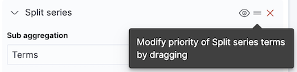
-
To customize the series colors, click the series in the legend, then select the color you want to use.
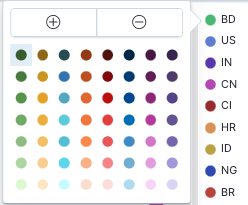
Try it: Create an aggregation-based bar chart
editYou collected data from your web server, and you want to visualize and analyze the data on a dashboard. To create a dashboard panel of the data, create a bar chart that displays the top five log traffic sources for every three hours.
Add the data and create the dashboard
editAdd the sample web logs data that you’ll use to create the bar chart, then create the dashboard.
- On the home page, click Try sample data.
- Click Other sample data sets.
- On the Sample web logs card, click Add data.
- Open the main menu, then click Dashboard.
- On the Dashboards page, click Create dashboard.
Open and set up the aggregation-based bar chart
editOpen the Aggregation based editor and change the time range.
- On the dashboard, click All types > Aggregation based, select Vertical bar, then select Kibana Sample Data Logs.
- Make sure the time filter is Last 7 days.
Create the bar chart
editTo create the bar chart, add a bucket aggregation, then add the terms sub-aggregation to display the top values.
-
Add a Buckets aggregation.
- Click Add, then select X-axis.
- From the Aggregation dropdown, select Date Histogram.
-
Click Update.
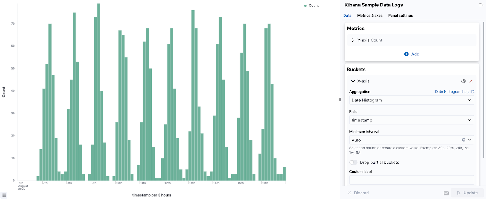
-
To show the top five log traffic sources, add a sub-bucket aggregation.
-
Click Add, then select Split series.
Aggregation-based panels support a maximum of three Split series.
- From the Sub aggregation dropdown, select Terms.
- From the Field dropdown, select geo.src.
-
Click Update.
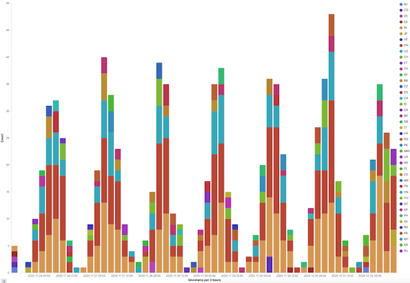
-
Open and edit aggregation-based visualizations in Lens
editWhen you open aggregation-based visualizations in Lens, all configuration options appear in the Lens visualization editor.
You can open the following aggregation-based visualizations in Lens:
- Area
- Data table
- Gauge
- Goal
- Heat map
- Horizontal bar
- Line
- Metric
- Pie
- Vertical bar
To get started, click Edit visualization in Lens in the toolbar.
For more information, check out Create visualizations with Lens.
Save and add the panel
editSave the panel to the Visualize Library and add it to the dashboard, or add it to the dashboard without saving.
To save the panel to the Visualize Library:
- Click Save to library.
- Enter the Title and add any applicable Tags.
- Make sure that Add to Dashboard after saving is selected.
- Click Save and return.
To save the panel to the dashboard:
- Click Save and return.
-
Add an optional title to the panel.
- In the panel header, click No Title.
- On the Panel settings window, select Show title.
- Enter the Title, then click Save.